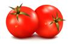

<!DOCTYPE html>
<html>
<head>
	<meta charset="UTF-8">
	<link href="../css/style_mock.css" rel="stylesheet" />
</head>
 <body>
<script type="text/javascript" src="../../mock_code.js"></script>
<script>

//todo - Read question from notepad
var questions = [
["Honeybee is a/an -<BR>","bird","reptile","insect","none","C"],
["When air is blown into balloon, it goes bigger and bigger. What does it mean __________ - <BR>","Air is light","Air is present everywhere","Air takes up space","Air contains smoke and dust","C"],

["Which of the following is natural sources of water - ","","","","All of these","D"],
["Which of the following statement is CORRECT","We should throw garbage in water","Dirty air is good for health","Loss of water could lead us and plants to die","We should eat junk food","C"],
["Windmills are used to produce __________ - <BR>","Water","Air","Electricity","Light","C"],
["Which of the following is causes air polution","","","","All of these","D"],
["Identify the organ in following figure - <BR>","Kidneys","Heart","Liver","Brain","A"],
["Exercise results in strong muscles and ______","skin","bones","eyes","stomach","B"],
["Following image is which type of building- <BR>","Church","Temple","Tomb","Gurudwara","D"],
["Which of these is not a domestic animal","Cow","Tiger","Camel","Horse","B"],
["Which of the following is not a man made things","","","","","D"],
["We learn _______________________ in the school","songs","dance","reading","All of these","D"],
["Which of the followings not a sharp object","niddle","knife","rubber","blade","C"],
["Stay away from hot -","iron","stove","heater","All of these","D"],
["Corns are - <BR>","Cereals","Pulses","Fruits","Raisins","A"],
["How many seasons are there depending on the climate - ","4","5","3","2","B"],
["________ traffic light says - wait !, wait ! , wait !","White","Green","Red","Yellow","D"],
["Tiny opening inside the leaf is called ________","hole","leaves","stomata","stem","C"],
["True or False <BR><BR>We should clean ears with pen.","True","False","Both","None","B"],
["True or False <BR><BR>Never cover your face while sleeping.","True","False","Both","None","A"],
["True or False <BR><BR>Never talk while food is in your mouth.","True","False","Both","None","A"],
["__________ is a star","The Earth","The Moon","The Sun","None","C"],
["Days are very cold in __________ season","summer","spring","winter","rainy","C"],
["Stars are - <BR>","big in size","very hot","bright","All of above","D"],
["Select the INCORRECT pair","Cold day - Sweaters","Hot day - Shawls & hand gloves","Rainy day - Raincoats","Hot day - cotton clothes","B"],
["Seasons of India - <BR>Select the CORRECT combination.<BR>","A - Winter, B - Summer, C - Spring, D - Autumn","A - Summer, B - Winter, C - Spring, D - Autumn","A - Sprint, B - Summer, C - Autumn, D - Winter", "A - Sprint, B - Summer, C - Winter , D - Autumn", "C"],
["The teacher writes on the blackboard with a - ","chalk","pen","pencil","duster","A"],
["We throw paper in the -","bucket","dustbin","bag","bottle","B"],
["Duster is used to rub the -","copy","blackboard","bulletin board","chart paper","B"],
["It is dangerous to play -","with a pet","in the garden","on the road","in the house","C"],
["Big plants are called - ","herbs","shrubs","trees","climbers","C"],
["Pea plant is a -<BR>","climbers","creepers","herbs","shrubs","A"],
["A watch helps us to tell ______","speed","temperature","time","rain-fall","C"],
["A _______ is the time between sunrise and sunset","day","night","month","year","A"],
["The day ends with _____","sunrise","sunset","afternoon","none","B"],


]

</script>
<table><tr>
  <td class="timer-pic"></td><td class="timer-text"><p id="demo" ></p></td> 
</tr>
</table>
<h2 id="test_status"></h2>
<div id="test"></div>
</body>
</html>
